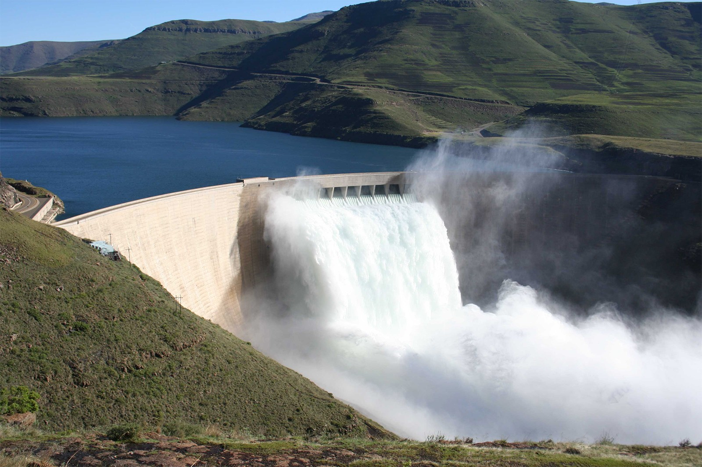

Nature · South-east
Sehlabathebe National Park
Basalt cliffs, sandstone formations and alpine grasslands set the scene in Lesotho’s first national park.
HikingBirdingTake the road that climbs
A few places to begin
Search by name or filter by experience to find your next stop.
Basalt cliffs, sandstone formations and alpine grasslands set the scene in Lesotho’s first national park.
HikingBirdingA spectacular mountain route connecting Lesotho and KwaZulu-Natal. Check access conditions and travel with an experienced guide.
Scenic driveHigh altitude
Discover a striking mountain reservoir and the engineering story behind the Lesotho Highlands Water Project.
ViewsCultureVisit the historic sandstone plateau closely tied to King Moshoeshoe I and the founding story of the Basotho nation.
HeritageGuided visitsA high-altitude resort in the Maluti Mountains. Check seasonal activities, road conditions and opening information before travelling.
Mountain stayAdventureExplore Lesotho’s history and cultural heritage in Morija. Confirm current opening times and visit arrangements before you go.
HistoryCultureA distinctive highland landmark near Thaba Bosiu, known for its resemblance to the traditional Basotho mokorotlo hat.
SceneryHeritageVisit the dramatic Maletsunyane Falls near Semonkong and enjoy the surrounding mountain scenery. Ask local guides about safe viewpoints and routes.
WaterfallScenic viewsDiscover a protected mountain landscape in the Maluti range. Check local park information for trail access and visitor guidance.
HikingNatureVisit the dinosaur track site and discover a remarkable trace of prehistoric life in Lesotho. Check local access information before setting out.
HeritageGeologyA highland waterfall framed by steep green slopes. Ask local guides about the route, walking conditions and safe viewpoints.
WaterfallScenic viewsSee the historic cave dwellings built beneath a sandstone overhang and learn about the people and heritage connected to the site.
HeritageArchitectureTake in the reservoir and mountain scenery around Mohale Dam, part of the Lesotho Highlands Water Project.
WaterScenic driveExplore the highland landscape around the Polihali Dam project. Visitor access can change with construction and project operations, so check current local guidance.
WaterEngineeringExperience the highlands on horseback with a local guide. Choose a route that suits your ability and follow local advice for a safe ride.
Horse ridingGuided activityVisit the cultural village near the historic Thaba Bosiu plateau for a closer look at Basotho heritage and traditional village life.
CultureHeritageNo destinations match your search. Try another word or category.
Stay a little longer
Make the journey yours with locally rooted stays and highland experiences.
Look for guesthouses, lodges and community stays near your route. Ask about road access, meals and warm layers before you book.
Ask about a stay →Explore with a local guide, ride a Basotho pony, visit a heritage site or simply make time for a scenic drive and village stop.
Plan an experience →A little preparation